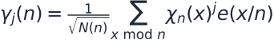
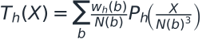
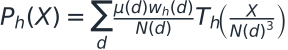

Reading: October §§2.3–2.5; schematic proof map
Poisson summation changes the viewpoint
We have derived the boundary assuming the mean-square theorem. Now we look inside its proof. Expanding the square and applying Poisson summation in the row variable replaces arithmetic positions by Fourier frequencies. Finite Fourier transforms of sextic characters produce Gauss sums. A Gauss–Jacobi identity combines these with the Möbius coefficients, producing cubic Gauss-sum coefficients.
Arithmetic coefficients become theta coefficients
Those cubic Gauss sums occur as Fourier coefficients of a cubic theta function. This supplies transformation laws that were invisible in the original sum. To use them, the paper completes squarefree indices n to indices n times b cubed. The extra cube factors are essential. This diagram is a structural map; it suppresses local factors, coprimality conditions, and auxiliary characters.
Why quadratic characters are a gain
After the theta transformation, the relevant sextic phases combine into a third power, which is quadratic. The quadratic large sieve bounds a mean square using a row-plus-column scale, M plus L, up to small powers. This avoids the additional term that can appear in a general higher-order character estimate. The gain is quantitative, not simply a new way of writing the same sum.
Completion creates a debt
The completed sum includes cube factors that were not in the target. Möbius inversion removes them. Small cube divisors can be bounded directly. Large cube divisors leave a remainder, and that remainder still has to be controlled. This is where the recursion enters. The transformation and these remainder estimates are deep inputs claimed by the manuscript; our animations do not independently prove them.
Equations to pause over


